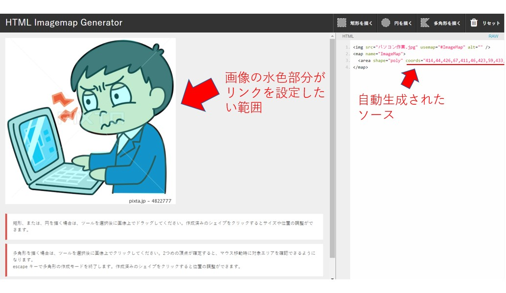

マウスでドラッグするだけで、ソースが自動生成されます。
イメージマップは画像の一部にリンクをかける際使用していた機能ですが、
私の場合Dreamweaverの自動生成機能を使用していたため、ソースを記述した経験がありません。
いろいろと調べてみると、基本は座標を記述していくようですが、複雑なかたちをした画像（例えば人間のシルエットなど）に
リンクを設定する場合どうすればよいのか。早速便利なツールを見つけました。
「HTML Imagemap Generator」というツールです。
このツールを使うと簡単な方法でイメージマップのリンクのソースが自動で生成できます。
以下、作成方法です。
- リンクを設定したい画像を用意する。
- HTML Imagemap Generatorをブラウザで開く。
- 画像をHTML Imagemap Generatorの該当スペースにドラッグ＆ドロップする。
- ウインド右上にある描画メニューを選び、リンクをかけたい箇所をドラッグしていく
- 描画を終了すると、ウインド右側に自動生成されたソースが表示される。
上記の手順で作成されたソースをhtmlファイルに追記すれば完成です。
イメージマップについてはレスポンシブに対応させる場合には、どうすればいいのか
という疑問も解決できていませんので、追って調べていきたいと思います。

▼自動生成されたソース
<img src="image01.jpg" usemap="#ImageMap" alt="" />
<map name="ImageMap">
<area shape="poly" coords="422,51,434,78,434,78,434,78,422,62,433,79,445,119,442,148,434,166,412,195,392,205,376,227,396,239,408,254,417,280,423,319,424,371,423,408,282,407,286,388,267,387,265,380,262,378,233,414,80,400,66,398,61,387,58,383,7,240,7,223,7,220,28,206,68,190,109,179,115,183,119,188,144,259,157,308,158,327,179,326,176,323,178,318,189,311,206,311,214,306,226,306,228,301,278,299,294,271,295,263,294,251,278,257,238,255,216,244,202,235,198,229,198,220,202,201,201,187,194,164,189,141,188,131,186,139,182,141,176,131,173,119,173,101,178,84,187,63,217,35,259,12,292,5,311,5,334,6,355,8,381,23,387,27,393,14,398,12,406,20,404,31,411,24,419,34,418,39,410,41,410,41,410,41" href="#" alt="" />
</map>